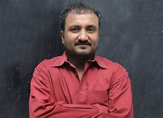

EDUCATION HEROES
1. Anand Kumar

Teaches underprivileged students for IIT-JEE. Anand Kumar hails from Bihar where his father was a clerk.
His life was tough and grounded at the start but his hardships led his way to Cambridge University which at the time had offered him a seat in their prestigious institution. His papers on the ‘Number Theory’ segment got published in international mathematical magazines.
His financial circumstances made him study during the day and sell ‘papad’ in the evening. After 15 years, his teachings led to the admission of 27 out of 30 students for the IIT JEE entrance exam.
2. Sohaila Abdulali
ohaila Abdulali was born in Bombay, India. She did her schooling in India, and moved to the United States with her family when she was 15. Since then, she has lived in both countries. She has a BA from Brandeis University in Economics and Sociology, and an MA from Stanford University in Communication.
Fighting sexual violence, Sohaila was only 17 when a gang of four men armed with sickle raped her and held her friend hostage for long hours. However, this thing was not something that could hold her from doing great in life. Sohaila went on and became an author writing two books in the process.
For two years, Sohaila was the Director of Communications at AIDS-Free World, an international advocacy organization. In this position, she wrote briefs, reports, press releases, essays, letters and more, which were carried by worldwide media; helped set up the communications strategy of the organization; assisted in the development of a new website; and initiated several large ongoing projects including a comprehensive atlas of AIDS.
3. Shankar Abaji Bhisey
Born only a decade after the Sepoy Mutiny of 1857, Shankar Abaji Bhisey was a child prodigy who designed an indoor coal-gas generator, when he was only 14.Hailing from Bombay, the brilliant researcher seemingly got his early exposure to global science through science magazines.
However, Bhisey is most recognised for his iconic Bhisotype, a type-casting machine that revolutionised the printing industry. In one minute, the machine could cast and assemble 1200 different types automatically.
Throughout his career, Bhisey had 200 inventions and 40 patents to his name, which include a unique telephone model, kitchen appliances, automatic toilet flushers and even an early prototype of a push-up bra.